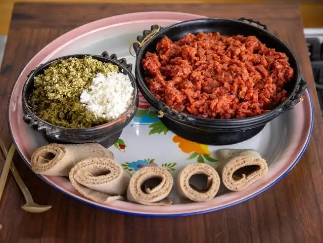

← Home
Kitfo

Kitfo dish
Kitfo is hand-chopped high-quality raw meat, a traditional Ethiopian dish.
Main ingredients
- High-quality red meat (lean)
- Niter kibbeh (spiced clarified butter) or regular butter
- Mitmita (chili spice blend)
- Garlic
- Ginger (optional but common)
Steps
- Melt the butter in a saucepan over low heat.
- Add minced garlic, ginger, and mitmita (or other spices).
- Add the finely chopped red meat.
- Mix thoroughly until the meat is evenly coated and just warmed (do not fully cook if serving the traditional raw version).